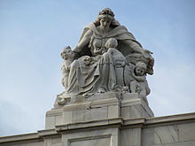

The Victoria Memorial is a large marble building in Central Kolkata, which was built between 1906 and 1921. It is dedicated to the memory of Queen Victoria, Empress of India from 1876 to 1901. It is now a museum under the auspices of the Ministry of Culture, and is the largest monument in the world which is dedicated to a royal.The memorial lies on the Maidan and is one of the famous monuments of Kolkata.

History
Following the death of Queen Victoria in January 1901, it was suggested by Lord Curzon, then-Viceroy of India, that a fitting memorial to the late Queen-Empress be created. Lord Curzon proposed the construction of a grand building with a museum and gardens. Curzon said, "Let us, therefore, have a building, stately, spacious, monumental and grand, to which every newcomer in Calcutta will turn, to which all the resident population, European and Native, will flock, where all classes will learn the lessons of history and see revived before their eyes the marvels of the past." The Prince of Wales, laid the foundation stone on 4 January 1906, and it was formally opened to the public in 1921.
Museum
The Victoria Memorial has 25 galleries. These include the royal gallery, the national leader's gallery, the portrait gallery, central hall, the sculpture gallery, the arms and armory gallery, and the newer, Kolkata gallery. The Victoria Memorial has the largest single collection of the works of Thomas Daniell (1749–1840) and his nephew, William Daniell (1769–1837). It also has a collection of rare and antiquarian books such as the illustrated works of William Shakespeare, the Arabian Nights and the Rubaiyat by Omar Khayyam as well as books about kathak dance and thumri music by Nawab Wajid Ali Shah. However, the galleries and their exhibitions, the programmatic elements of the memorial do not compete with the purely architectural spaces or voids.

Victoria GalleryThe Victoria Gallery displays several portraits of Queen Victoria and Prince Albert, and paintings illustrating their lives, by Jansen and Winterhalter. The oil paintings are copies of those in London. They include Victoria receiving the sacrament at her coronation in Westminster Abbey (June 1838); Victoria's marriage to Albert in the Chapel Royal at St James's Palace (1840); the christening of the Prince of Wales in Windsor Castle (1842); the marriage of Edward VII to Princess Alexandra (1863); Victoria at the First Jubilee service at Westminster Abbey (1887) and the Second Jubilee service at St. Paul's Cathedral (June 1897). Queen Victoria's childhood rosewood pianoforte and her correspondence desk from Windsor Castle stand in the center of the room. Edward VII presented these items to the Victoria Memorial. On the south wall hangs the Russian artist Vasily Vereshchagin's oil painting of the state entry of Edward VII in Jaipur in 1876.

In the mid-1970s, the matter of a new gallery devoted to the visual history of Kolkata was promoted by Saiyid Nurul Hasan, the minister for education. In 1986, Hasan became the governor of West Bengal and chairman of the Victoria Memorial board of trustees. In November 1988, Hasan hosted an international seminar on the Historical perspectives for the Kolkata tercentenary. The Kolkata gallery concept was agreed and a design was developed leading to the opening of the gallery in 1992. The Kolkata gallery houses a visual display of the history and development of Kolkata when the capital of India was transferred to New Delhi. The gallery also has a life-size diorama of Chitpur road in the late 1800s.
Gardens
The gardens at the Victoria memorial cover 64 acres (260,000 m2) and are maintained by a team of 21 gardeners.